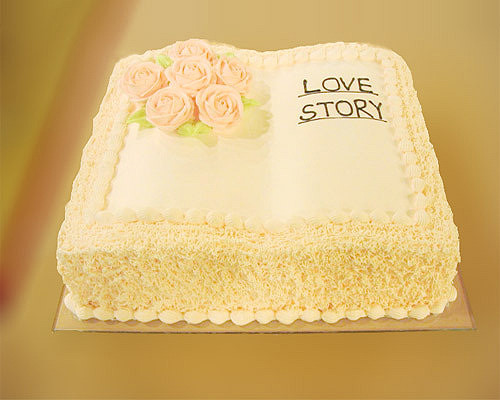
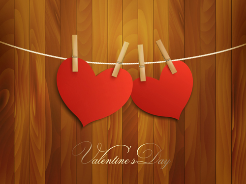
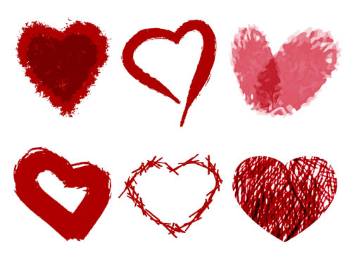

Click
Loading pages...

Our love story~
begin...

篇目一：
初见你。

对你的第一印象是在院长第一课的时候。只记得那时候的你穿着高跟鞋站在文优旁。我知道，你我将在不久后认识。对你的第二印象是在破冰，你上去玩游戏，我听到君博师兄说了一声‘朔君’。于是，我知道了你的名字。。。

玩游戏的你逗逗的~你玩完以后。我也跑上去玩了。说真的，我跑上去玩还真的是因为你，因为看到你上去了。虽然那时候我们不曾相识。。。

看到这张照片~真的好像毫无交集的两个人哦。~\(≧▽≦)/~啦啦啦 谁知道我们以后能在一起呢。

现在想想，破冰还是有点遗憾的，破冰没有和你一组，也没有在那时就与你相识。

对你的第三印象是在游园的时候。你拍这些照片的时候我都不在~。我是后来才去的。。。可是你那时候没有留意我吧？~

嗯哼。我应该就是这个时候走过来的。~ 但是没有发现你哦~你在看手机干嘛？ 等下要去找人吧~ 因为我后来一直走在你后面~ 听到你问师兄怎么去其他学校了~

不要问我怎么都是合照~ 没办法。 我哪里有未卜先知的能力呀~ 那时候就拍好照片~ 不过我们的故事就是这样开始的啦~

嗯。竞选班干的时候~印象最深刻的就是，你说你自己是一个外冷内热的人~ 可是我还是给家永投票了~

最后就是走秀的你~ 恩。 其实你走秀的时候，那时候我已经认识我们班很多女生了。可是还没来得急认识你。。。

篇目二：
相识相知。

我们是怎么开始认识的？嗯。我记得那时候你坐在够妹的旁边，我坐在你后面，拍了你一下，问你是不是珠海的。这也是我跟你说的第一句话。以此为由，QQ也开始了对话~

然后就是各种代码啦~你还真的有点笨笨的啊~哈哈，那么简单都不会。不过很长的一段时间里，你都是代码不会了才主动找我的。我还应该感谢代码吧？。。。
然后就是各种代码啦~你还真的有点笨笨的啊~哈哈，那么简单都不会。不过很长的一段时间里，你都是代码不会了才主动找我的。我还应该感谢代码吧？。。。

为了和你有更多的交集，硬把班服的事情推给你。。。

你去官洲，本来是摄影师，结果被推给模特~。。。

为什么要把这个照片放在这里？你不记得了吧。推你做班服的时候，班会你也来了。那时候的你刚刚拍完回来，突然觉得其实你很好。。。

我记得很多关于你的事情，其实好像，你说过的，我便不曾忘记。。。


班服终于有思路了。这是你和我印在班服上的照片~ 咩哈哈~ 不觉得我很帅吗

你在试穿班服，嗯，红裙子还是很搭的~(腿也挺细的~啊哈哈)。。。

后来，你找我要了假面舞会的票。有点小激动，觉得可以在假面舞会上和你跳舞的。结果因为没带眼镜，以为一个有男朋友的妹纸是你。那时候真的有点伤心好吗！

额. 后来知道认错人了. 你还说看到我和一个妹纸跳舞 o(╯□╰)o~ 不是没找到你嘛.

到了创新赛啦~自信满满的你还是没进决赛吧~ 不觉得主持人的我好帅么~~ 没发现我很频繁地走在你的面前吗？。。。

接着就是院运会了。好遗憾。没找到我拿着旗，你举着牌的照片。又是我死皮赖脸拉你去举牌的。院运会记得很清楚！！我和你说话你都不搭理我的！

你拿了跳远的第八名。很嘚瑟。嘚瑟得你爸说只有八个人参加，你才拿奖吧~啊哈哈。可惜我走早了。没和你们一起拍合照。

光棍节的时候被黑了~你也是帮凶之一~说得我那么好？你怎么不会喜欢我呢？。。。

听说你要去南校玩~我也决定去南校。后来你又跑去市区，我又去找你。可惜最后还是没见你。最后，你夜游珠江夜不归宿~而我疲倦地回去了。

到了1758第一次路演啦~你又不知道吧~我在四饭的阳台那里看着你各种忙活，各种拍照。也发现了你的背影还真是很有杀伤力的嘛~。

又死皮赖脸地找你去舞陪~你也终于答应我拉~高高兴兴去给你发飞舞函。也终于被你承认只是你的好基友之一T T

好像你第一次舞培回家了。第二次，你去外拍了。等你了好久，差点这唯一的一次你也因为太晚不去了。也就这唯一一次和你跳舞。

后来，我生病回家了。也是在那个时候，我很想你关心一下我。我也知道自己可能喜欢上你了。只是那时你根本没有在意我。你跑中猪辩论，一恢复我就也过去了。

第二天你回去了，我也决定回去。还决定碰运气和你一起上车。所以拿着8点的票希望可以上4点的车。结果我被留下来了，你走了，你还跟我说你要和其他人去舞培。。。

那时候的我回复你很坦荡的，但是内心失落透了，傻傻地坐在候车间。突然觉得是不是自己错了呢？我本来就应该是朋友的角色。也就那时我决定，我要压抑住这样的感情。


义卖啦~你是采购物资组的，又有点后悔我没有报名物资组。你的宣传照~嗯哼。 阿瑾拍得还是不错的，

义卖当天，卖萌的你~ 好像你卖东西是很容易的o(╯□╰)o 果然是性别差异吗。看到有男生调戏你~ 不开心

啊哈哈~你拍的 不关我事~ 罗璇那时真是个萌妹纸~ 哼 别人都有男朋友了 你还这样拍 想我被K死吗!!!

恩。和你去新天地拿明信片的时候被偷排了~ 哎。 为什么那么多人都懂 你就是不懂。

不过,反正我已经决定做朋友了... 然后就是1758了~你darling来了.我也只是匆匆看了你一眼,就去吃庆功宴了.

其实只要你有留意.你就会看到我的微博了.我那天拿到了花.本来真的想给你的.哪怕是朋友的名义?可是最后还是没有送出去.其实一个人在1758的氛围里太心酸了,看到你,什么都压心底,更加难受了.所以我走了...


写到这里,我发现你真的好笨.那么多我喜欢你的迹象.你都看不出来吗...还是你故意装傻呢...

2013年元旦到了~你发短信祝我元旦快乐，养得像圆圆的蛋一样胖。 这是你发给我的第一条短信... 你说,你想别人因为你而幸福.我想,你可以因为我而幸福...

201314,千载难逢的好日子,真适合表白.可惜我真的下定决心当朋友.你的生日也这天.1月3,因为你在义卖的时候说,你想要那种质感的抱枕,我跑了一天市区,还是没找到.

一个学期过了.寒假,你跑来珠海各种事情和找闺蜜玩.其实我那时候真的挺想找你的.但是又担心你误会.而且,有什么借口呢？

新学期又至,一开始几天我们好像生疏了.不过很快又熟络了. 这次你主动找我了. 因为我生日到了.你直接问我想要什么礼物o(╯□╰)o. 哪里有这样的. 一点心意都没.生日准点,你就发短信来了.其实是不是我对你还是挺重要的？

第二天就是女生节了. 你还记得是我把女生节礼物递给你的么? 我递了两次. 你的,我还是想亲手递.~ 可惜你的愿望还是没人给你实现~ 那我现在补呗.~

女生节还在宿舍楼下唱歌 T T 人群中都听到自己走音~~
红木棉~ 没图。但是也是因为红木棉那次让我真的有点压制不住自己了啊T T. 你怎么那么笨啊.我说你没人要,嫁不出去T T.通过狗血电视剧的剧情都知道我喜欢你啊T T。让你开了十秒电摩就搭着我上路T T。小命都搭上了~ 不过风吹来你的发梢的味道~ 太难抗拒了。。。
我不会告诉你,我们下图书馆的斜坡的时候还是被阿瑾她们看到了. 她们从那个时候就开始猜测了~ 害羞~


你突然去了从化旅游.也不跟我说下. 有点不开心. yd这照片拍得绝对没有我好啊~ 啊哈哈.


嗯哼~来点换了无节操的照片.


再后来,你终于起了期待已久的厦门.瞬间变成小清新哦. 嗯. 这照片拍得腿还是很长滴.


嗯.我也想去厦门的,也想和你一起去次旅游.但是你不会去了...哎. 所以,算了吧...

嗯哼.后来是拍微电影.你最后还是没有露脸.啊哈哈. 不过你的背影真的很有女神范嘛.

跑去摄影课堂。其实用相机拍了你很多张的 可是都拿不回来了T T只能用这个手机偷排的 好抓鸡. 啊哈哈. 模特很不错. 但是她们不是吕朔君。。。

某一次给你debug，被东宇偷拍。。。 嗯。 按照后来剧情发展 他偷拍得挺准的。 只是别人都看得出来 你还是那么笨


不知道什么时候开始,我们喜欢比QQ秀... 也喜欢给对方施咒. 不知道什么时候我们的话越来越多.

不知何时,你开始C++实验课要坐我旁边.给我打包下午茶.偶尔给我弄糖水.有空的时候我给你补课,假装要捏你的脸.我们越来越像恋人. 红木棉的时候,你第一次载着我.你的发梢的香味忽远忽近.

这些,算是暧昧吗?我也不知道.我们的距离好像一下子近了很多. 友达以上，恋人未满就是那样的吧？ 但是不能否认的是,其实我已经喜欢你很久了.很久了. 所以... 没有忍住.就表白了...恩...冒着连朋友都可能做不了的危险表白了, 你不知道需要多大的勇气吧...

篇目三：
相恋册。
2013年05月21日
今天是我们的第二天。 其实今天不开心。 昨天也不开心。 我才刚刚给你表白了，你刚刚答应了，别人怎么可以给你表白！ 那是昨天。 今天被你的闺蜜损得好受伤。 难道我真的那么失败么。 好吧。 这个也不是重点。 今天我很不开心、 是因为， 你都没看到的重点。 你其实对我没什么想法。。。。。。。
我也很开心，因为你.
昨天我们一起去看画展了 还是没有勇气牵起你的手啊>,< 。 嗯哼 今天很意外收到你的糖水啊 你还是很贤惠很贤惠的嘛。 只是不知道 你是不是有想法了。。。

是不是很熟悉？这些都是我原来博文写过的东西. 我跟你说都删掉了. 其实只是改了权限. 我怎么可能舍得删去我们的回忆. 我只是真的不忍心博客里只有不开心的东西了. 原本记录美好回忆的地方,你舍得让它变成吐槽的地方吗.

一开始的回忆很甜蜜.一起去逛画展.第一次牵手.一起去中心湖散步...在一起后的第一次分别,我好想你.你也好想我...这张照片就是那时候你拍的...

给你过6月1...那天你去做礼仪...你说你被其他妹纸吃了点东西.不开心. 下一年六一还会有的嘛~

班委换届那天,因为时间改了,载着你游了好多圈中大的校园。把你的笑偷排得不错吧~ 第一次在座位下偷偷牵着你的手.其实挺幸福的~

第一次去看电影~不听我话吧~只有半场电影看了. 之前还傻呼呼的跑了那么多找电影院 不过在地铁上第一次抱了你~

放假了~很想你的. 所以你来珠海的第一天等你很久也要见你. 小别胜新婚吖T T. 第二天带你去了纪中. 在书香园的时候静静呆着,世界好像就只有我和你.

嗯.还去了看天台~ 哎 送你回家的路怎么总是那么短o(╯□╰)o

第三天,你就回深圳了。依依不舍地,你走的时候,其实很想抱抱你的.但是人太多了T T

然后我就跑深圳了~ 又下雨T T. 抱着你在雨中静静呆着. 发现我们怎么总是遇到雨啊T T. 偷句歌词,最美的不是下雨天,是与你躲雨的屋檐，

混混沌沌地搭大巴~ 偷拍到你搭在我的肩的照片 逛完世界之窗鞋子都湿了T T 又倦又累

...到了今年了.不开心好像变得越来越多了...好担心会失去你. 我忘了跟你说. 其实我很懒. 有了你. 我就懒得再换了...

哎 挺没有准备的见到你爸妈了。。。 有点被坑到的感觉。。。 感觉有点不自然。。。陪你逛街很开心，只是你还是没有买到鞋子，但是最后你妈妈说的话其实让我挺受伤的T T
呜呜呜 我突然发现军训没有给你拍照片！！！！好吧~ 又没图了。。。o(╯□╰)o 军训的时候其实想好好照顾的人 每天都想着能不能给你送吃的喝的。 其实没人陪的我日子好无聊- - 。。。

又一次走秀了。 说是去看迎新晚会。 其实还不是为了去看你。。。给你拍照。。。 结果照片都不能看T T

红砖厂！！！为什么还是下雨！ 嗯T T 照片拍得都不杂地. 没有默契. 我没有穿情侣装... 恩. 有你在的红砖厂还是可以看的.

国庆假期 你跑去了武汉T T 给我带了鸭脖子。。。 好辣好吗！ 而且你弟弟拍照怎么可能比我拍得好！！！！

摄协又去红砖厂T T。我其实挺想和你一组的,不过分组的你都不分我和你一组有什么办法T T。 偷偷拍你背影好了T T。 认真拍模特的你也不理我T T

又是一年院运会时,也没有好好的照片T T。可惜要上雅思,没有很多时间陪你一起在院运会混T T 这次你跳远还得了第三名 嘚瑟死了吧~

2013年十一月的第一天. 你darling和男朋友来了,见他们之前有点小争吵T T. 其实最后感觉还好, 跪CPU还是很过瘾的,不过我不要跪！！！

2013年11月19日,我们的半周年.一起去唱了K. 其实很喜欢你坐在我腿上和我聊天的感觉~ 你送了我小白~ 它好像真要变小黄了T T

带你去看周杰伦的演唱会~ 你的第一次演唱会经历~ 嗯. 现场的气氛就是不一样~ 和你在一起 当然值回票价啦 恩.你忘记拿票的时候,我不应该甩开你的手的. 对不起嘛T T

然后晚上按着你,和你聊到了四点多T T。说好一起看星星的. 结果忘记看了. 所以,我想一周年的时候再来补回好了~ 这里就标记下~ 记得看~ 偷拍的睡照就不po上来啦 偷拍的时候好想bo你一下的 害羞..~~